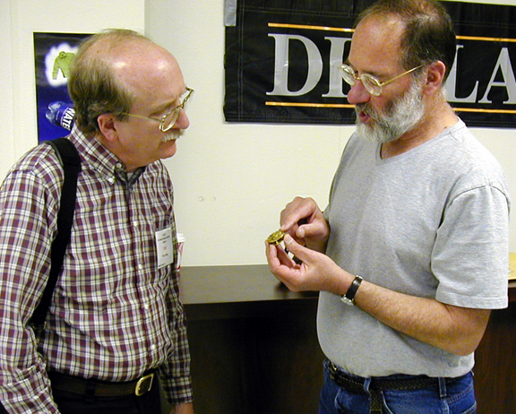

Gremlins in Watch Repair
This is an archived report. Meeting places, times and people have changed since it was written. See Meetings for current details.
Our May 11th Meeting was held on Mothers Day with a moderate turnout. In the past years the Chapter has met on the first Sunday of May instead of the second Sunday. A very popular “Flea Market” recently got it’s start in old Alameda Naval Air Station and has become the place to buy and sell. Of course it meets on the first Sunday of each month. With the first and second Sundays of May being bad, maybe we should try the third Sunday for our Chapter Meeting. It’s a thought.

After a short membership and business meeting, our program for the day was member Seth Finklestein speaking on Gremlins in watch repair. Seth has a repair shop in the Santa Cruz area about 90 miles south of San Francisco. The gremlins Seth talked about were the less obvious watch problems you normally don’t run across on a normal cleaning or repair job. Things like worn jewels, pallet jewels misplaced. bent balance staff pivots, hairspring problems, etc.. Seth provided picture handouts showing good and bad examples of these gremlins.